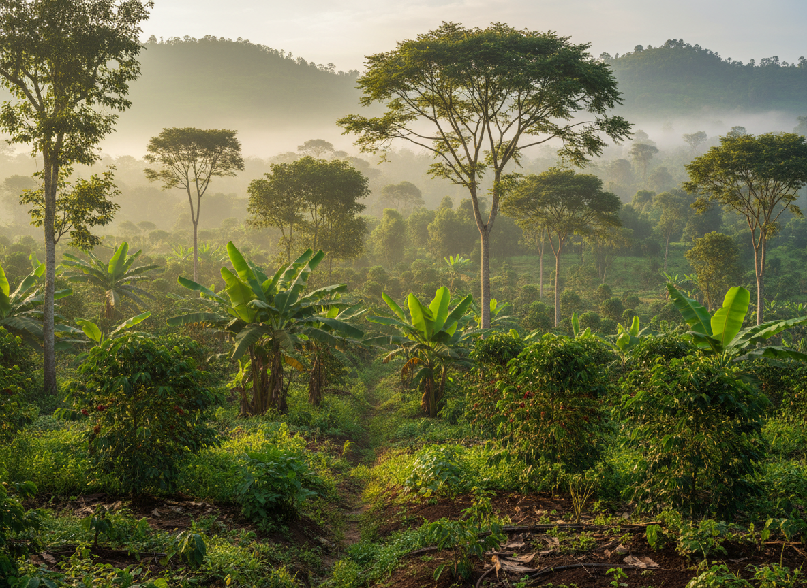

Biocultural Restoration
Reviving landscapes by weaving together culture, community, and ecology.
Learn MoreWhen we restore the land, we restore ourselves. Through biocultural wisdom, regenerative practices, and community action, we are building landscapes and cities that thrive.

People closest to the challenges are often closest to the solutions. We work with communities, especially women and young people, to turn local knowledge, ecological wisdom, and community-led innovation into solutions that regenerate livelihoods, landscapes, and futures.
We work across interconnected focus areas that restore ecosystems, protect culture, and grow community leadership.

Reviving landscapes by weaving together culture, community, and ecology.
Learn More
Greening cities for cleaner air, cooler streets, and thriving biodiversity.
Learn More
Farming with nature, not against it, so food systems regenerate ecosystems.
Learn More
Protecting indigenous seeds, stories, and food sovereignty.
Learn MoreSupport forests, seeds, farms, green cities, and community ideas that are ready to become long-term solutions.